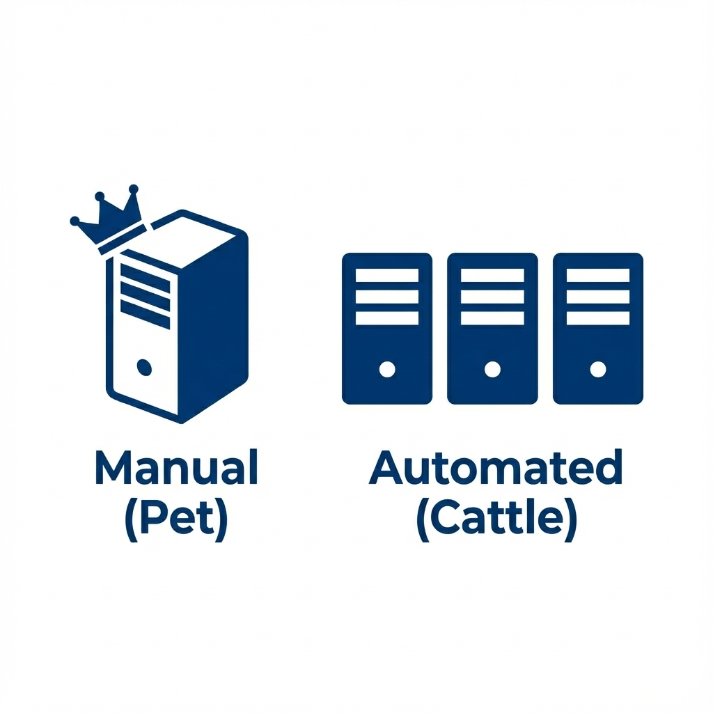
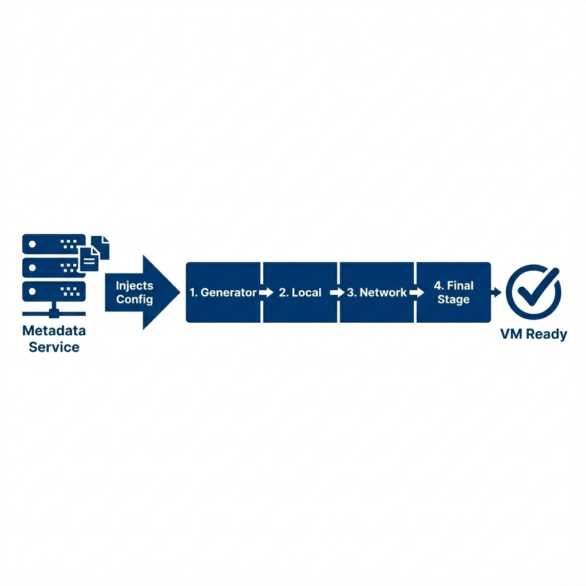

Automation and Cloud API
Student NotesCourse: Computer Systems Engineering
Module: Operating Systems 3 (Virtualisation & Cloud Technologies)
Topic: Automation and Cloud API
Estimated Reading Time: 30 Minutes
Automation is what separates a cloud engineer from a sysadmin. Focus on understanding APIs — clicking buttons doesn't scale, but code does.
Welcome to DevOps
Clicking GUI buttons is fine for 1 server. It fails for 100 servers. This creates a scalability bottleneck that manual administration simply cannot overcome.
This challenge gave birth to DevOps, a methodology that unifies software development (Dev) and IT operations (Ops). At its core, DevOps is about automation, collaboration, and speed. It shifts the focus from manually configuring servers to writing code that defines them—a concept known as (IaCInfrastructure as Code ). In a DevOps model, infrastructure is versioned, tested, and deployed just like software applications, eliminating the "it works on my machine" problem.
This week, we learn to control the cloud using code. By mastering tools like the OpenStackOpen-source cloud computing platform platform CLICommand Line Interface, Cloud-Init, Heat, and AnsibleAutomation tool for configuration management, you are learning the foundational skills required for a modern DevOps or Site Reliability Engineering (SRE) role. You will transition from clicking buttons in a dashboard to designing self-healing, automated systems that can scale to thousands of instances with a single command.
1. Advanced CLI Techniques
The openstack command is powerful, but by default, it formats output as ASCII tables designed for human readability. While this is helpful for interactive use, it poses a significant challenge for automation scripts, which struggle to parse table borders and varying whitespace. To build robust tools, we must use machine-readable output formats.
1.1 Formatting Output
The CLI natively supports JSON output, which provides a structured and predictable data format that scripting languages can easily parse. By appending --format json to any command, we strip away the visual formatting and receive raw data objects.
# Standard Table (Human Readable)
openstack server list
# JSON Output (Machine Readable)
openstack server list --format json
•
--format json: Forces the CLI to output raw JSON data instead of an ASCII table. This is essential for piping data into tools like jq or Python scripts.
1.2 Parsing with jq
jq is a lightweight command-line JSON processor that allows us to filter, slice, and map JSON data directly in the terminal. It acts as a bridge between the verbose API output and the specific strings (like UUIDs) needed for subsequent commands.
# Basic: Get the ID of the network named 'private-net'
NET_ID=$(openstack network show private-net -f json | jq -r .id)
echo $NET_ID
# We pipe the server list into jq, filter for specific status, and extract the IDs.
ACTIVE_IDS=$(openstack server list -f json | jq -r '.[] | select(.Status=="ACTIVE") | .ID')
$(): Command substitution; runs the inner command and assigns the output to the variable.|: The pipe operator passes the output of the openstack platform command directly tojq.jq -r .id: Filters the JSON to find the key "id". The-r(raw) flag removes quotation marks, leaving just the UUID.select(): A powerfuljqfunction that acts like aWHEREclause in SQL, allowing you to filter lists based on conditions.
In the example above, the -f json flag forces OpenStack platform to output JSON. We then pipe this valid JSON to jq. The -r flag is crucial as it outputs "raw" strings without quotation marks, making the output ready for variable assignment. We also use the select function to filter the array, ignoring any servers that are building, paused, or shut down.
1.3 Architectural Insight: Golden Images vs. Post-Boot Config
The OpenStack platform for Architects book details two competing strategies for deploying applications: Golden Images and Post-Boot Configuration.

Figure 1: Pet vs Cattle - Manual "Pet" servers require constant care, while Automated "Cattle" servers are replaceable and identicalGolden Images (Mutable/Baked) involve installing all application dependencies—such as Apache, PHP, and custom code—into the Virtual Machine image before it is ever launched. This is typically done using tools like Packer. The primary advantage is speed; since the software is pre-installed, the VM - is ready almost instantly upon boot. However, this method suffers from "Image Sprawl," where every minor code change requires building and uploading a new multi-gigabyte image to Glance platform image service , consuming storage and bandwidth.
Post-Boot Configuration (Immutable/Runtime) takes a different approach. You launch a generic, "Vanilla" operating system image (like Ubuntu Cloud Image) and use automation tools to install software after the instance boots. While this results in a slower initial startup time as packages are downloaded and installed, it offers superior flexibility. A single small base image can serve thousands of different purposes. Modern cloud architecture typically favors a Hybrid Approach, using a base image for the OS and tools like Ansible for the final application configuration.
JSON is the lingua franca of Cloud APIs, providing a structured format that is trivial for machines to parse. To work effectively,
jq is an essential tool for extracting specific fields like resource IDs. Before writing any automation, a cloud engineer must master programmatically retrieving clean, predictable data.
Reflection: Consider why grep is a poor choice for parsing JSON data; a simple change in line breaks or spacing could break a script, whereas jq parses the data structure itself. Also, recall that the -r flag in jq strips quotes from the output, which is essentially when passing values to other CLI commands.
Resources: jq Tutorial
2. Cloud-Init: The Standard for Bootstrapping
When a virtual machine boots in the cloud, it starts as a generic "clone " of an Operating System. It has no idea who it is, what its hostname should be, or what software it needs. Cloud-Init is the industry-standard multi-distribution package that solves this identity crisis. It runs during the initial boot process to identify the environment and apply unique configurations.

Figure 2: Cloud-Init Workflow - How the script is injected from the Metadata Service and executed during the first boot2.1 How it Works: The Datasource
The magic of Cloud-Init relies on a Datasource. On boot, Cloud-Init acts like a detective, probing the network to find out where it is running. In OpenStack platform (and AWS), it typically queries the Metadata Service at the "Magic IP" 169.254.169.254. If it receives a response, it pulls down a JSON payload containing the instance's Hostname, SSH Keys, and the User Data provided by the operator.
2.2 Execution Stages
Cloud-Init does not run as a single script; it executes in distinct stages throughout the boot process to ensure dependencies are met: 1. Generator: Determines if cloud-init should run at all. 2. Local (Init): Finds the datasource and applies networking. This is critical because without networking, it cannot fetch further data. 3. Network (Config): Runs after networking is up. Disk formatting, mount points, and SSH key injection happen here. 4. Final: This is where User Data scripts run (installing packages, running commands). This ensures the system is fully online before attempting to install software.
2.3 The Cloud-Config Format
While User Data can be a simple Bash script, the preferred format is Cloud-Config. This is a declarative YAML syntax that abstractly defines what you want, rather than how to do it. To use this format, the input string must begin with the #cloud-config directive.
#cloud-config
hostname: web-01
packages:
- apache2
- htop
runcmd:
- systemctl start apache2
- echo "<h1>Deployed via Automation</h1>" > /var/www/html/index.html
#cloud-config: The required header telling Cloud-Init this is declarative YAML.packages: A list of software to install via the OS package manager (apt,yum).runcmd: A list of shell commands to execute after packages are installed. This is often used to start services or configure files.
2.4 Common Patterns (The Cookbook)
Writing User Data requires understanding common patterns. Below are standard recipes frequently used in production.
Pattern 1: The Web Server This pattern installs a web server, writes a custom index file, and ensures the service is running.
#cloud-config
packages:
- nginx
write_files:
- content: |
<h1>Welcome to Cloud</h1>
path: /var/www/html/index.html
runcmd:
- systemctl restart nginx
write_files: Creates use-case specific configuration files. Thecontentblock allows multiline text.runcmd: Restarts the service to ensure the new configuration is applied.
Pattern 2: The User Creator This pattern creates a new user account, grants it sudo privileges without a password requirement, and injects an SSH public key for secure access.
#cloud-config
users:
- name: student
groups: sudo
shell: /bin/bash
sudo: ['ALL=(ALL) NOPASSWD:ALL']
ssh_authorized_keys:
- ssh-rsa AAAAB3Nza...
users: A dedicated module for user management.sudo: Grants password-less root access, critical for automated management tools like Ansible.
Pattern 3: The Update This pattern instructs the system to upgrade all installed packages on boot. Use this cautiously, as it significantly increases the boot time.
#cloud-config
package_upgrade: true
•
package_upgrade: true: Forces an apt-get upgrade or yum update on first boot. While secure, it adds significant time to the boot process.
2.5 Using it in CLI
To inject this configuration, you save the YAML to a local file (e.g., setup.yaml) and pass it to the compute API during the server creation process.
openstack server create \
--flavor m1.tiny \
--image ubuntu \
--user-data setup.yaml \
my-automated-server
•
--user-data setup.yaml: Injects the contents of the file setup.yaml into the instance's metadata service. Cloud-Init reads this file upon first boot.
2.6 Troubleshooting (When things go wrong)
A common mistake is assuming that if a server boots, the automation worked. If your script fails (e.g., a syntax error in YAML), the server will still boot, but your app won't be there. To debug this, you must SSH into the server and check the logs:
/var/log/cloud-init.log: The high-level log of what cloud-init attempted to do./var/log/cloud-init-output.log: The raw stdout/stderr of your scripts. If yourapt-get installfailed, the error message will be here.
Cloud-Init is the bridge between a generic OS image and a functional server. It relies on a Datasource to fetch configuration and executes in strict Stages (Init → Config → Final) to ensure the network is ready before Attempting to install software.
Reflection: Why is the "Magic IP" (169.254.169.254) accessible from inside the VM - without any internet access? (Hint: It is a Link-Local address routed explicitly by the Hypervisor/Neutron platform networking service ).
Resources: Cloud-Init Documentation
3. Automating with Scripts
Now that we have the tools (CLI, jq, Cloud-Init), let's put them together. The most basic form of automation is Scripting.
3.1 The "Bash Loop" (Imperative)
Imagine a scenario where you need to provision a cluster of five servers for a Load Balancing laboratory. Doing this manually is tedious and error-prone. A simple loop can automate the process effectively.
#!/bin/bash
echo "Deploying Cluster..."
for i in {1..5}; do
echo "Launching web-$i..."
openstack server create \
--flavor m1.tiny \
--image cirros \
--network private-net \
web-$i
done
for i in {1..5}: Creates a loop that runs 5 times, with variable$iset to 1, 2, 3, 4, 5.web-$i: Dynamically names the servers (web-1, web-2...) using the variable.--network private-net: Ensures all servers attach to the same internal network.
3.2 Python Automation (The SDK)
While Bash scripts are useful for quick tasks, they often become unmaintainable "spaghetti code" when applied to complex systems. For professional cloud engineering, the OpenStack platform SDK (Python) provides a robust alternative.
Why Python?
Python offers several advantages over shell scripting. First, Error Handling is handled gracefully through try/except blocks, preventing the script from crashing unexpectedly. Second, Python's native Data Structures, such as Dictionaries and Lists, are far easier to manipulate than parsing string output from a CLI commands. Finally, the logic required for Idempotency—checking if a resource exists before attempting to create it—is significantly cleaner to implement.
3.2.1 Authentication (The clouds.yaml)
Hardcoding passwords into scripts is a major security risk. Instead, OpenStack platform uses a standardized configuration file named clouds.yaml to decouple credentials from code. When you run a script, the SDK searches for this file in a specific order of precedence:
- Current Directory: Checks
./clouds.yaml(Good for project-specific configs). - User Config: Checks
~/.config/openstack/clouds.yaml(The standard location for your personal credentials). - System Config: Checks
/etc/openstack/clouds.yaml(Global settings for all users).
This allowing you to share your Python script with a colleague without accidentally sharing your password—they simply use their own clouds.yaml.
Example Content (clouds.yaml):
clouds:
openstack platform :
auth:
auth_url: "http://10.0.0.10:5000/v3"
username: "admin"
password: "secret_password"
project_name: "admin"
domain_name: "Default"
region_name: "RegionOne"
interface: "public"
identity_api_version: 3
Explanation: *
clouds: The top-level key containing all cloud definitions. *openstack: The specific profile name. In Python, we select this withcloud='openstack'. *auth_url: The Keystone platform identity/authentication service API endpoint. The SDK sends credentials here to get a token.
Connecting in Python:
from openstack platform import connection
# Connect using the 'openstack platform ' profile defined above
conn = connection.from_config(cloud='openstack platform ')
3.2.2 Reading Resources (Listing Servers)
The SDK returns Objects, not text. This means you can access properties like .id or .status directly without complex parsing.
print("Listing Servers:")
servers = conn.compute.servers()
for server in servers:
print(f"ID: {server.id} | Name: {server.name} | Status: {server.status}")
•
conn.compute.servers(): Returns a generator (iterable list) of Server objects.•
server.name: Access data using dot-notation, which is cleaner than manual string parsing.
3.2.3 Creating Resources (The Clean Way)
Creating a server in Python allows us to wrap the logic in a Try/Except block to handle failures (like Quota errors) gracefully.
try:
print("Creating Server...")
server = conn.compute.create_server(
name="web-python-01",
image_id="cirros-id-here",
flavor_id="m1.tiny",
networks=[{"uuid": "private-net-id"}]
)
# Wait for it to be ready
conn.compute.wait_for_server(server)
print(f"Created Server: {server.name}")
except Exception as e:
print(f"Failed to create server: {e}")
•
create_server(): Accepts arguments as standard Python types.•
wait_for_server(): Pauses the script until the server is ACTIVE, replacing manual loops.•
try/except: Captures errors (like Quotas) and prints friendly messages instead of crashing.
4. : Heat vs Terraform
The distinction between "Imperative" scripts (Bash) and "Declarative" (IaC ) is fundamental. Imperative tools describe how to achieve a task step-by-step, whereas Declarative tools describe the desired end state, leaving the "how" to the engine.
4.1 The Two Giants
Two primary tools dominate this landscape. Heat is the OpenStack platform Native orchestration engine. It is built directly into the platform, requires no external installation, and uses YAML templates. It is the ideal choice for pure OpenStack platform environments where external tool dependencies are undesirable. Terraform, created by HashiCorp, is the Industry Standard for multi-cloud provisioning. It uses the HashiCorp Configuration Language (HCL) and supports AWS, Azure, Google Cloud, and OpenStack platform simultaneously, making it the dominant skill in the broader job market.
4.2 Syntax Comparison (Creating a Server)
Option A: OpenStack platform Heat (HOT)
resources:
my_server:
type: OS::Nova platform compute service for VMs ::Server
properties:
image: ubuntu
flavor - template - image for quick deployment defining vCPUs, RAM, and disk : m1.small
Option B: Terraform (HCL)
image_name = "ubuntu"
flavor_name = "m1.small"
}
• Heat: Uses
type: OS::Nova::Server and nested properties.• Terraform: Uses
resource "type" "name" and = assignment syntax.Note: We focus on Heat as it's native to OpenStack, but Terraform is the dominant industry standard for multi-cloud.
We have transitioned from Imperative procedural steps to Declarative IaC. These tools are Idempotent, meaning they only act if the resource isn't already in the desired state.
Reflection: Consider why a company using multiple cloud providers (e.g., AWS and on-prem OpenStack platform ) would prefer Terraform over Heat. Also, think about the consequences of removing a resource definition from a Terraform file or Heat template - image for quick deployment ; unlike a script which simply stops running, IaC tools will actively destroy the resource to ensure the real world matches your definition.
5. Orchestration with Heat (The Template - image for quick deployment Engine)
Orchestration goes beyond simple resource creation; it manages the dependencies and lifecycle of complex applications. In OpenStack platform , the native Orchestration engine is Heat.
5.1 Anatomy of a Template - image for quick deployment
Heat uses YAML templates known as HOT (Heat Orchestration Templates). Every template - image for quick deployment follows a standard skeleton:
- Version:
heat_template_version: 2018-08-31tells Heat which features are available. - Parameters: Inputs provided by the user at runtime (e.g., SSH Key Name, Server Flavor - template - image for quick deployment defining vCPUs, RAM, and disk ).
- Resources: The actual infrastructure to build (VMs, Networks, Volumes).
- Outputs: Information returned to the user after deployment (e.g., The Website URL).
heat_template_version: 2018-08-31
description: A skeleton template - image for quick deployment
parameters:
# Inputs defined here
resources:
# Infrastructure defined here
outputs:
# Return values defined here
• Version: Required. HOT 2018-08-31 is standard for Queens/Rocky.
• Parameters: Variables passed in (Input).
• Outputs: Variables passed out (Return values).
5.2 Building Blocks (Primitives)
Rather than writing a massive script immediately, let's look at how to create individual components.
Creating a Network
resources:
my_private_net:
type: OS::Neutron platform networking service ::Net
properties:
name: deep-dive-net
•
my_private_net: The Logical ID used for internal references.•
type: Specific class (e.g., OS::Neutron::Net).•
properties: Specific configuration like the network name.
Creating a Security Group
resources:
my_security_group:
type: OS::Neutron platform networking service ::SecurityGroup
properties:
rules:
- protocol: tcp
port_range_min: 80
port_range_max: 80
remote_ip_prefix: 0.0.0.0/0
• Default Deny: No traffic is allowed unless explicitly permitted.
• CIDR Notation:
0.0.0.0/0 means "The entire internet," while 192.168.1.0/24 limits access to a specific network.
Creating a Block Storage Volume
resources:
my_data_volume:
type: OS::Cinder platform block storage service ::Volume
properties:
size: 10
name: db_data
•
type: OS::Cinder::Volume: Creates a block device in Cinder.•
size: Capacity in Gigabytes (GB).
Creating a Virtual Machine
resources:
my_server:
type: OS::Nova platform compute service for VMs ::Server
properties:
image: ubuntu
flavor - template - image for quick deployment defining vCPUs, RAM, and disk : m1.small
•
image / flavor: Mandatory properties defining specs.• Properties: Includes
key_name (SSH), networks (Connect), and user_data (Cloud-Init).
5.3 The Unified Stack
The true power of Heat comes from combining these primitives using Intrinsic Functions.
{ get_resource: X }: Gets the ID of resource X.{ get_param: Y }: Gets the value of user input Y.{ get_attr: [Z, val] }: Gets a specific attribute (like an IP address) from resource Z.
Full Deployment Example (deployment.yaml):
heat_template_version: 2018-08-31
description: Full Stack Deployment with Nginx and Floating IP
parameters:
key_name:
type: string
description: Name of an existing KeyPair to use
public_net_id:
type: string
description: ID of the external network (e.g., public-net)
resources:
# 1. The Network
app_net:
type: OS::Neutron platform networking service ::Net
app_subnet:
type: OS::Neutron platform networking service ::Subnet
properties:
network: { get_resource: app_net }
cidr: 192.168.10.0/24
# 2. The Security Group
web_sg:
type: OS::Neutron platform networking service ::SecurityGroup
properties:
rules:
- protocol: tcp
port_range_min: 80
port_range_max: 80
remote_ip_prefix: 0.0.0.0/0
- protocol: icmp
remote_ip_prefix: 0.0.0.0/0
# 3. The Server
web_instance:
type: OS::Nova platform compute service for VMs ::Server
properties:
image: ubuntu_focal
flavor - template - image for quick deployment defining vCPUs, RAM, and disk : m1.small
key_name: { get_param: key_name }
networks:
- network: { get_resource: app_net }
security_groups:
- { get_resource: web_sg }
user_data: |
#cloud-config
packages:
- docker.io
runcmd:
- systemctl enable docker
- systemctl start docker
- docker run -d -p 80:80 nginx
# 4. Floating IP (The Bridge to Internet)
my_floating_ip:
type: OS::Neutron platform networking service ::FloatingIP
properties:
floating_network: { get_param: public_net_id }
# 5. The Association (Connecting IP to Server)
association:
type: OS::Neutron platform networking service ::FloatingIPAssociation
properties:
floatingip_id: